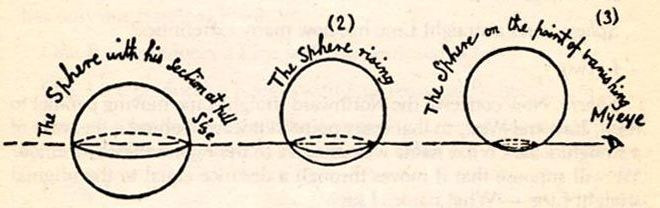
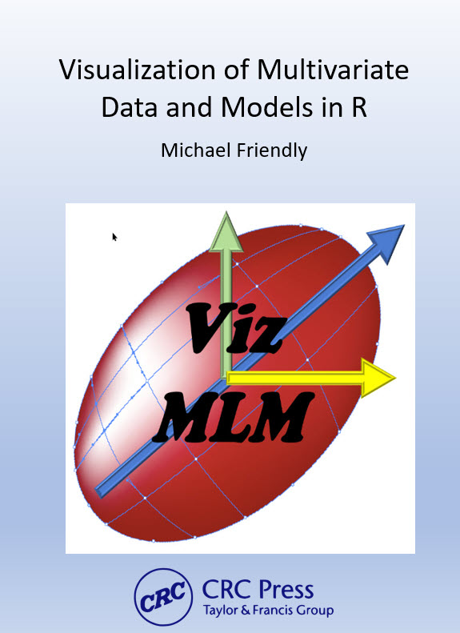
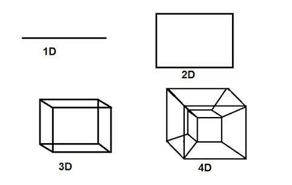
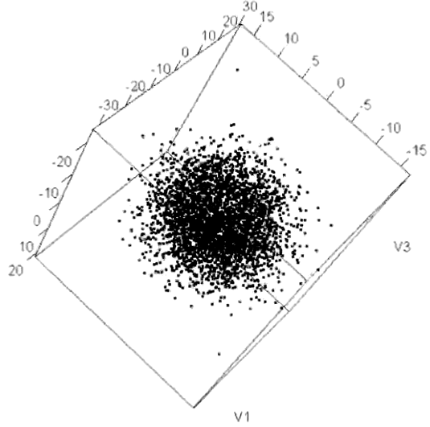
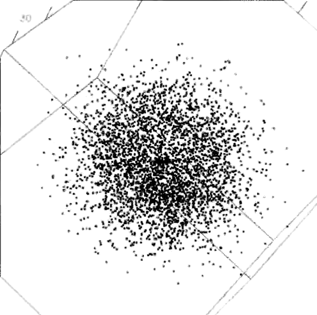
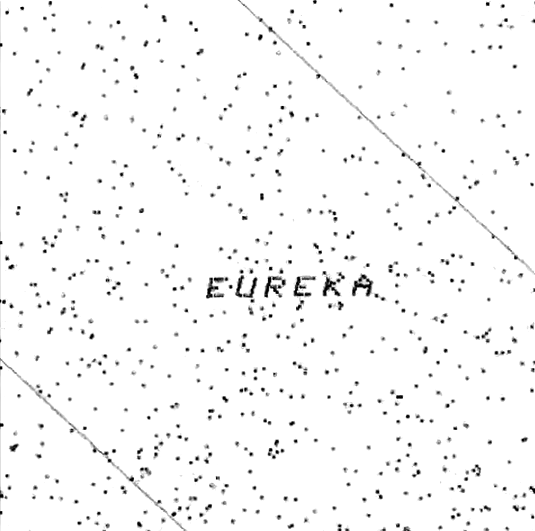
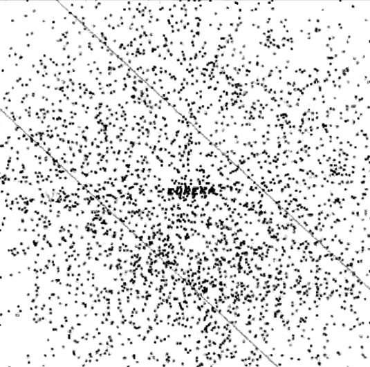
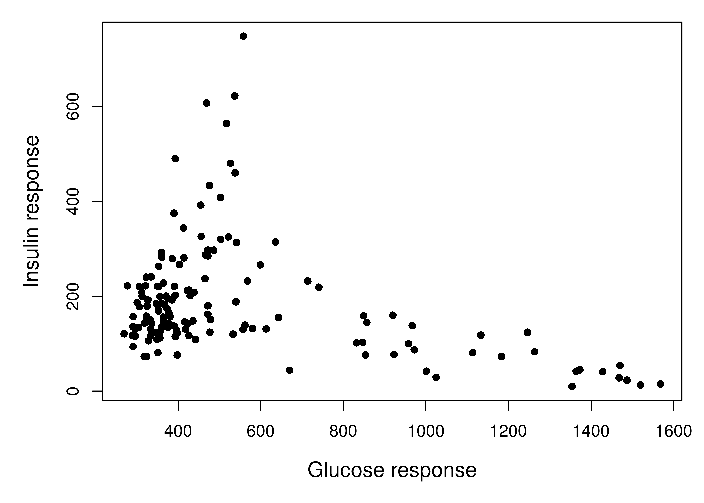

Preface

TODO: Make this a more general introduction
This book is about graphical methods developed recently for multivariate data, and their uses in understanding relationships when there are several aspects to be considered together. Data visualization methods for statistical analysis are well-developed for simple linear models with a single outcome variable. However, with applied research in the social and behavioral sciences, it is often the case that the phenomena of interest (e.g., depression, job satisfaction, academic achievement, childhood ADHD disorders, etc.) can be measured in several different ways or related aspects.
For example, if academic achievement can be measured for adolescents by reading, mathematics, science and history scores, how do predictors such as parental encouragement, school environment and socioeconomic status affect all these outcomes? In a similar way? In different ways? In such cases, much more can be understood from a multivariate approach that considers the correlations among the outcomes. Yet, sadly, researchers typically examine the outcomes one by one which often only tells part of the data story.
However, to do this it is useful to set the stage for multivariate thinking, with a grand scheme for statistics and data visualization, a parable, and an example of multivariate discovery.
ONE, TWO, MANY
There is an old and helpful idea I learned from John Hartigan in my graduate days at Princeton:
In statistics and data visualization all methods can be classified by the number of dimensions contemplated, on a scale of ONE, TWO, MANY.
By this, he meant that, at a global level, all data, statistical summaries, and graphical displays could be classified as:
- univariate: a single variable, considered in isolation (age, COVID cases, pizzas ordered). Univariate numerical summaries are means, medians, measures of variablilty, and so forth. Univariate displays include dot plots, boxplots, histograms and density estimates.
- bivariate: two variables, considered jointly. Numerical summaries include correlations, covariances and two-way tables of frequencies or measures of association for categorical variables. Bivariate displays include scatterplots and mosaic plots.
- multivariate: three or more variables, considered jointly. Numerical summaries include correlation and covariance matrices, consisting of all pairwise values, but also derived measures from the analysis of these matrices (eigenvalues, eigenvectors). Graphical displays of multivariate data can sometimes be shown in 3D, but often involve multiple views of the data projected into 2D plots.
As a quasi-numerical scale, I refer to these as 1D, 2D and nD. This admits the possibility of half-integer cases, such as 1.5D, where the main focus is on a single variable, but that is classified by a simple factor (e.g., gender), or 2.5D where a 2D scatterplot can show other variables using color, shape or other visual attributes His point in this classification was that once you’ve reached three variables, all higher dimensions involve similar summaries and data displays.
Univariate and bivariate methods and displays are well-known. This book is about how these ideas can be extended to an \(n\)-dimensional world. Three-dimensional data displays are now fairly easy to produce, even if they are sometimes difficult to understand. But how can we even think about four or more dimensions? The difficulty can be appreciated by considering the tale of Flatland.
Flatland
To comport oneself with perfect propriety in Polygonal society, one ought to be a Polygon oneself. — Edwin A. Abbott, Flatland
In 1884, an English schoolmaster, Edwin Abbott Abbott, shook the world of Victorian culture with a slim volume, Flatland: A Romance of Many Dimensions (Abbott, 1884). He described a two-dimensional world, Flatland, inhabited entirely by geometric figures in the plane. His purpose was satirical, to poke fun at the social and gender class system at the time: Women were mere line segments, while men were represented as polygons with varying numbers of sides— a triangle was a working man, but acute isosceles were soldiers or criminals of very small angle; gentlemen and professionals had more sides. Abbot published this under the pseudonym, “A Square”, suggesting his place in the hierarchy.
True, said the Sphere; it appears to you a Plane, because you are not accustomed to light and shade and perspective; just as in Flatland a Hexagon would appear a Straight Line to one who has not the Art of Sight Recognition. But in reality it is a Solid, as you shall learn by the sense of Feeling. — Edwin A. Abbott, Flatland
But how did it feel to be a member of a flatland society? How could a point (a newborn child?) understand a line (a woman)? How does a Triangle “see” a Hexagon or even a infinitely-sided Circle? Abbott introduces the very idea of different dimensions of existence through dreams and visions:
A Square dreams of visiting a one-dimensional Lineland where men appear as lines, and women are merely “illustrious points”, but the inhabitants can only see the Square as lines.
In a vision, the Square is visited by a Sphere, to illustrate what a 2D Flatlander could understand from a 3D sphere (Figure 1) that passes through the plane he inhabits. It is a large circle when seen at the moment of its’ greatest extent. As the Spehere rises, it becomes progressively smaller, until it becomes a point, and then vanishes.
Abbott goes on to state what could be considered as a demonstration (or proof) by induction of the difficulties of seeing in 1, 2, 3 dimensions, and how the idea motion over time (one more dimension) could allow citizens of any 1D, 2D, 3D world to contemplate one more dimension.
In One Dimensions, did not a moving Point produce a Line with two terminal points? In two Dimensions, did not a moving Line produce a Square with four terminal points? In Three Dimensions, did not a moving Square produce - did not the eyes of mine behold it - that blessed being, a Cube, with eight terminal points? And in Four Dimensions, shall not a moving Cube - alas, for Analogy, and alas for the Progress of Truth if it be not so - shall not, I say the motion of a divine Cube result in a still more divine organization with sixteen terminal points? — Edwin A. Abbott
For Abbot, the way for a citizen of any world to imagine one more dimension was to consider how a higher-dimensional object would change over time.1 A line moved over time could produce a rectangle as shown in Figure 2; that rectangle moving in another direction over time would produce a 3D figure, and so forth.

But wait! Where does that 4D thing (a tesseract) come from? To really see a tesseract it helps to view it in an animation over time (Figure 3). But like the Square, contemplating 3D from a 2D world, it takes some imagination.

Yet the deep mathematics of more than three dimensions only emerged in the 19th century. In Newtonian mechanics, space and time were always considered independent of each other. Our familiar three-dimensional space, of length, width, and height had formed the backbone of Euclidean geometry for millenea. However, the idea that space and time are indeed interwoven was first proposed by German mathematician Hermann Minkowski (1864–1909) in 1908. This was a powerful idea. It bore fruit when Albert Einstein revolutionized the Newtonian conceptions of gravity in 1915 when he presented a theory of general relativity which was based primarily on the fact that mass and energy warp the fabric of four-dimensional spacetime.
The parable of Flatland can provide inspiration for statistical thinking and data visualization. Once we go beyond bivariate statistics and 2D plots, we are in a multivariate world of possibly MANY dimensions. It takes only some imagination and suitable methods to get there.
Like Abbott’s Flatland, this book is a romance, in many dimensions, of what we can learn from modern methods of data visualization.
EUREKA!
Even modest sized multivariate data can have secrets that can be revealed in the right view. As an example, David Coleman at RCA Laboratories in Princeton, N.J. generated a dataset of five (fictitious) measurements of grains of pollen for the 1986 Data Exposition at the Joint statistical Meetings. The first three variables are the lengths of geometric features 3848 observed sampled pollen grains – in the x, y, and z dimensions: a ridge along x, a nub in the y direction, and a crack in along the z dimension. The fourth variable is pollen grain weight, and the fifth is density. The challenge was to “find something interesting” in this dataset, now available as animation::pollen.
Those who solved the puzzle were able to find an orientation of this 5-dimensional dataset, such that zooming in revealed a magic word, “EUREKA” spelled in points, as in the following figure.




pollen data, zooming in, clockwise from the upper left to discover the word “EUREKA”.This can be seen better in a 3D animation. The rgl package (Adler & Murdoch, 2023) is used to create a 3D scatterplot of the first three variables. Then the animation package (Xie, 2021) is use to record a sequence of images, adjusting the rgl::par3d(zoom) value.
Code
library(animation)
library(rgl)
data(pollen, package = "animation")
oopt = ani.options(interval = 0.05)
## adjust the viewpoint
uM =
matrix(c(-0.3709192276, -0.5133571028, -0.7738776206, 0,
-0.7305060625, 0.6758151054, -0.0981751680, 0,
0.57339602708, 0.5289064049, -0.6256819367, 0,
0, 0, 0, 1), 4, 4)
open3d(userMatrix = uM,
windowRect = c(10, 10, 510, 510))
plot3d(pollen[, 1:3])
# zoom in
zm = seq(1, 0.045, length = 200)
par3d(zoom = 1)
for (i in 1:length(zm)) {
par3d(zoom = zm[i])
ani.pause()
}
ani.options(oopt)
pollen data. This figure only appears in the online version.Multivariate scientific discoveries
Lest this example seem contrived (which it admittedly is), multivariate visualization has played an important role in quite a few scientific discoveries. Among these, Francis Galton’s (1863) discovery of the anti-cyclonic pattern of wind direction in relation to barometric pressure from many weather measures recorded systematically across all weather stations, lighthouses and observatories in Europe in December 1861 stands out as the best example of a scientific discovery achieved almost entirely through graphical means–– something that was totally unexpected, and purely the product of his use of remarkably novel high-dimensional graphs (Friendly & Wainer, 2021, pp. 170–173).
A more recent example is the discovery of two general classes in the development of Type 2 diabetes by G. M. Reaven & Miller (1979), using PRIM-9 (Fishkeller et al., 1974), the first computer system for high-dimensional visualization2. In an earlier study G. Reaven & Miller (1968) examined the relation between blood glucose levels and the production of insulin in normal subjects and in patients with varying degrees of hyperglicemia (elevated blood sugar level). They found a peculiar “horse shoe” pattern They found a peculiar ``horse shoe’’ shape in this relation (shown in Figure 6), about which they could only speculate: perhaps individuals with the best glucose tolerance also had the lowest levels of insulin as a response to an oral dose of glucose; perhaps those with low glucose response could secrete higher levels of insulin; perhaps those who were low on both glucose and insulin responses followed some other mechanism. In 2D plots, this was a mystery.
data(Diabetes, package="heplots")
plot(instest ~ glutest, data=Diabetes,
pch=16,
cex.lab=1.25,
xlab="Glucose response",
ylab="Insulin response")
An answer to their questions came ten years later, when they were able to visualize similar but new data in 3D using the PRIM-9 system. In a carefully controlled study, they also measured ``steady state plasma glucose’’ (SSPG), a measure of the efficiency of use of insulin in the body, where large values mean insulin resistance, as well as other variables. PRIM-9 allowed them to explore various sets of three variables, and, more importantly, to rotate a given plot in three dimensions to search for interesting features. One plot that stood out concerned the relation between plasma glucose response, plasma insulin response and SSPG response, shown in Figure 7.
From this graphical insight, they were able to classify the participants into three groups, based on clinical levels of glucose and insulin. The people in the wing on the left in Figure 7, with high levels of fasting glucose, were considered to have overt diabetes. Those in the right wing were classified as chemical diabetics, and those in the central blob were classified as normal.
What I assume
It is assumed that the reader has a background in intermediate statistics including material on univariate linear models including analysis of variance (ANOVA) and multiple regression. This means you should be familiar with …
There will also be some mathematics in the book where words and diagrams are not enough. The mathematical level will be intermediate, mostly consisting of simple algebra. No derivations, proofs, theorems here! For multivariate methods, it will be useful to express ideas using matrix notation to simplify presentation. I’m using math to express ideas, and all you will need is a reading-level of understanding.
I also assume the reader to have at least a basic familiarity with R. While R fundamentals are outside the scope of the book, I believe that this language provides a rich set of resources, far beyond that offered by other statistical software packages, and is well worth learning.
For those not familiar with R, I recommend Matloff (2011), Wickham (2014), and Cotton (2013) for introductions to programming in the language, and Fox & Weisberg (2018) and Teetor (2011) for learning about how to conduct basic statistical analyses. TODO: Revise this list.
Conventions used in this book
The following typographic conventions are used in this book:
italic : indicates terms to be emphasized or defined in the text, …
bold : is used for names of R packages
fixed-width: is used in program listings as well as in text to refer to variable and function names, R statement elements and keywords.fixed-width italic: isn’t used yet, but probably should be.
For R functions in packages, we use the notation package::function(), for example: car::Anova() to identify where those functions are defined
In his famous TV series, Cosmos, Carl Sagan provides an intriguing video presentation Flatland and the 4th dimension. However, as far back as 1754 (Cajori, 1926), the idea of adding a fourth dimension appears in Jean le Rond d’Alembert’s “Dimensions”, and one realization of a four-dimensional object is a tesseract, shown in Figure 2.↩︎
PRIM-9 is an acronym for Picturing, Rotation, Isolation and Masking in up to 9 dimensions. These operations are fundamental to interactive and dynamic data visualization.↩︎